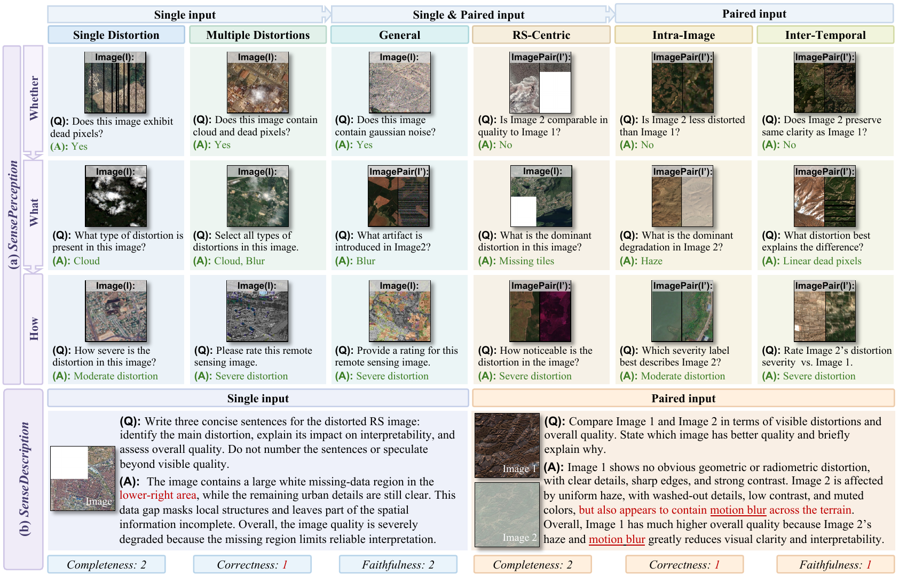

SenseBench: A Benchmark for Remote Sensing Low-Level Visual Perception and Description in Large Vision-Language Models
*Equal Contribution
†Corresponding Author
†Corresponding Author

Low-level visual perception underpins reliable remote sensing (RS) image analysis, yet current image quality assessment (IQA) methods output uninterpretable scalar scores rather than characterizing physics-driven RS degradations, deviating markedly from the diagnostic needs of RS experts. While Vision-Language Models (VLMs) present a compelling alternative by delivering language-grounded IQA, their visual priors are heavily biased toward ground-level natural images. Consequently, whether VLMs can overcome this domain gap to perceive and articulate RS artifacts remains insufficiently studied. To bridge this gap, we propose SenseBench, the first dedicated diagnostic benchmark for RS low-level visual perception and description. Driven by a physics-based hierarchical taxonomy that unifies both non-reference and reference-based paradigms, SenseBench features over 10K meticulously curated instances across 6 major and 22 fine-grained RS degradation categories. Specifically, two complementary protocols are designed for evaluation: objective low-level visual perception and subjective diagnostic description. Comprehensive evaluation of 29 state-of-the-art VLMs reveals not only skewed domain priors and multi-distortion collapse, but also fluency illusion and a perception-description inversion effect. We hope SenseBench provides a robust evaluation testbed and high-quality diagnostic data to advance the development of VLMs in RS low-level perception.
| Model | Question Type | Domain | Context | Average↑ | ||||
|---|---|---|---|---|---|---|---|---|
| Whether↑ | What↑ | How↑ | General↑ | RS↑ | Single↑ | Multi↑ | ||
| Human Baseline | ||||||||
| HUMAN EVALUATOR | 90.58% | 88.62% | 90.26% | 90.11% | 89.32% | 89.75% | 90.00% | 89.82% |
| General-Domain VLMs | ||||||||
| GPT-5.4 | 68.46% | 60.43% | 58.54% | 64.83% | 62.87% | 64.23% | 41.50% | 62.48% |
| Gemini-3.1-pro-preview | 87.17% | 80.17% | 59.92% | 79.47% | 80.06% | 79.68% | 41.17% | 75.75% |
| Ovis2.5-9B | 50.39% | 41.48% | 37.31% | 46.33% | 41.48% | 43.87% | 29.50% | 43.06% |
| Llama3.2-11B | 54.17% | 42.21% | 38.62% | 49.70% | 42.02% | 45.57% | 46.67% | 45.00% |
| Phi4-vision | 51.75% | 37.33% | 38.38% | 43.97% | 42.19% | 42.42% | 44.83% | 42.49% |
| LLaVA2-ov-7B | 70.58% | 67.57% | 54.31% | 71.07% | 61.46% | 67.26% | 46.00% | 64.15% |
| InternVL3.5-8B | 56.59% | 40.70% | 42.38% | 48.89% | 44.52% | 47.19% | 46.83% | 46.56% |
| InternVL3.5-14B | 53.14% | 41.77% | 42.23% | 46.47% | 44.64% | 46.47% | 39.67% | 45.71% |
| InternVL3.5-38B | 57.70% | 50.27% | 25.46% | 49.92% | 50.52% | 46.43% | 36.67% | 44.48% |
| InternVL3.5-30B-A3B | 58.99% | 47.96% | 47.77% | 53.30% | 51.61% | 52.26% | 44.17% | 51.57% |
| Qwen3VL-8B | 64.35% | 54.20% | 52.38% | 59.80% | 53.29% | 58.02% | 50.33% | 56.98% |
| Qwen3VL-32B | 69.94% | 63.65% | 60.15% | 70.06% | 56.40% | 65.92% | 58.33% | 64.58% |
| Qwen3VL-30B-A3B | 65.66% | 54.75% | 50.46% | 60.93% | 54.83% | 57.13% | 58.50% | 56.96% |
| KimiVL-A3B | 66.11% | 51.73% | 49.31% | 58.82% | 55.89% | 56.85% | 47.17% | 55.72% |
| Remote-Sensing and IQA VLMs | ||||||||
| DepictQA | 50.06% | 31.49% | 21.00% | 39.00% | 33.20% | 35.87% | 41.00% | 34.18% |
| Q-Instruct-LLaVA-13B | 53.95% | 36.41% | 48.69% | 45.37% | 46.98% | 46.11% | 40.83% | 46.35% |
| Q-Instruct-LLaVA-7B | 47.17% | 28.11% | 34.31% | 37.40% | 36.31% | 36.57% | 37.50% | 36.53% |
| GeoChat | 46.13% | 29.80% | 20.92% | 34.60% | 33.83% | 33.57% | 33.50% | 32.28% |
| TEOChat | 54.57% | 29.99% | 27.38% | 37.70% | 41.52% | 38.51% | 24.50% | 37.31% |
| EarthDial | 58.96% | 48.06% | 30.31% | 46.23% | 52.87% | 48.89% | 20.50% | 45.78% |
| LHRS-Bot | 54.96% | 27.01% | 26.15% | 35.47% | 40.56% | 37.40% | 33.17% | 36.04% |
| LHRS-Bot-nova | 47.83% | 23.54% | 21.54% | 30.83% | 33.85% | 30.85% | 41.33% | 30.97% |
| Model | Question Type | Domain | Context | Average↑ | ||||
|---|---|---|---|---|---|---|---|---|
| Whether↑ | What↑ | How↑ | General↑ | RS↑ | Intra.↑ | Inter.↑ | ||
| Human Baseline | ||||||||
| HUMAN EVALUATOR | 95.28% | 89.44% | 82.05% | 89.81% | 89.87% | 81.92% | 89.62% | 88.92% |
| General-Domain VLMs | ||||||||
| GPT-5.4 | 85.64% | 80.45% | 62.36% | 76.73% | 75.58% | 77.50% | 78.00% | 76.15% |
| Gemini-3.1-pro-preview | 89.64% | 90.00% | 64.21% | 81.94% | 80.63% | 82.55% | 84.33% | 81.28% |
| Ovis2.5-9B | 58.36% | 60.55% | 36.64% | 51.52% | 56.92% | 51.13% | 61.13% | 51.85% |
| Llama3.2-11B | 72.73% | 32.82% | 31.33% | 46.00% | 49.49% | 45.42% | 53.08% | 45.63% |
| Phi4-vision | 83.73% | 34.64% | 36.36% | 52.24% | 55.34% | 52.64% | 56.10% | 51.58% |
| LLaVA2-ov-7B | 69.00% | 52.09% | 37.62% | 57.21% | 51.94% | 51.70% | 63.52% | 52.90% |
| InternVL3.5-8B | 51.27% | 57.55% | 63.92% | 52.61% | 62.13% | 56.37% | 57.74% | 57.58% |
| InternVL3.5-14B | 56.91% | 61.27% | 56.64% | 54.85% | 63.24% | 57.92% | 60.00% | 58.27% |
| InternVL3.5-38B | 56.00% | 62.73% | 52.73% | 51.94% | 65.30% | 59.62% | 52.70% | 57.15% |
| InternVL3.5-30B-A3B | 68.73% | 66.64% | 62.80% | 63.58% | 70.28% | 65.52% | 69.06% | 66.06% |
| Qwen3VL-8B | 72.00% | 66.55% | 51.33% | 63.64% | 66.48% | 63.25% | 69.18% | 63.29% |
| Qwen3VL-32B | 79.27% | 75.82% | 57.62% | 70.30% | 75.73% | 70.57% | 78.24% | 70.90% |
| Qwen3VL-30B-A3B | 91.55% | 60.55% | 54.69% | 69.82% | 72.09% | 66.60% | 82.01% | 68.93% |
| KimiVL-A3B | 71.45% | 53.73% | 49.51% | 58.18% | 60.95% | 54.95% | 71.19% | 58.23% |
| Remote-Sensing and IQA VLMs | ||||||||
| DepictQA | 60.18% | 23.09% | 23.55% | 41.82% | 29.39% | 37.03% | 42.44% | 35.61% |
| TEOChat | 34.55% | 30.00% | 37.06% | 31.64% | 35.81% | 35.33% | 28.43% | 33.87% |
| EarthDial | 26.91% | 50.73% | 40.28% | 38.06% | 40.63% | 43.92% | 26.54% | 39.31% |
| Model | Single Image | Paired Images | ||||||
|---|---|---|---|---|---|---|---|---|
| Complete.↑ | Correct.↑ | Faithful.↑ | Sum↑ | Complete.↑ | Correct.↑ | Faithful.↑ | Sum↑ | |
| Human Baseline | ||||||||
| HUMAN EVALUATOR | 1.70 | 1.57 | 1.92 | 5.19 | 1.70 | 1.45 | 1.64 | 4.79 |
| General-Domain VLMs | ||||||||
| GPT-5.4 | 1.84 | 1.47 | 1.56 | 4.87 | 1.75 | 1.13 | 1.22 | 4.10 |
| Gemini-3.1-pro-preview | 1.73 | 1.45 | 1.53 | 4.71 | 1.70 | 1.49 | 1.50 | 4.69 |
| Ovis2.5-9B | 1.38 | 1.44 | 1.93 | 4.75 | 1.10 | 1.35 | 1.76 | 4.21 |
| Llama-3.2-11B | 0.79 | 0.63 | 1.11 | 2.53 | 0.97 | 0.67 | 0.94 | 2.58 |
| Phi4-vision | 1.05 | 0.75 | 1.73 | 3.53 | 0.83 | 0.09 | 0.62 | 1.54 |
| LLaVA2-ov-7B | 0.92 | 1.19 | 1.76 | 3.87 | 1.01 | 0.46 | 0.95 | 2.42 |
| InternVL3.5-8B | 1.19 | 0.85 | 1.74 | 3.78 | 0.80 | 0.37 | 0.75 | 1.92 |
| InternVL3.5-14B | 1.20 | 0.81 | 1.88 | 3.89 | 0.70 | 0.35 | 0.74 | 1.79 |
| InternVL3.5-38B | 1.01 | 0.71 | 1.73 | 3.45 | 0.84 | 0.64 | 0.89 | 2.37 |
| InternVL3.5-30B-A3B | 0.97 | 0.66 | 1.60 | 3.23 | 0.82 | 0.42 | 0.86 | 2.10 |
| Qwen3VL-8B | 1.24 | 0.99 | 1.85 | 4.08 | 1.23 | 0.66 | 1.24 | 3.13 |
| Qwen3VL-32B | 1.32 | 1.06 | 1.91 | 4.29 | 1.46 | 1.11 | 1.61 | 4.18 |
| Qwen3VL-30B-A3B | 1.29 | 1.09 | 1.82 | 4.20 | 1.15 | 0.81 | 1.22 | 3.18 |
| KimiVL-A3B | 0.76 | 0.78 | 1.08 | 2.62 | 0.97 | 0.84 | 1.09 | 2.90 |
| Remote-Sensing and IQA VLMs | ||||||||
| DepictQA | 1.50 | 0.97 | 1.19 | 3.66 | 1.11 | 0.31 | 1.05 | 2.47 |
| Q-Instruct-LLaVA-13B | 1.04 | 1.07 | 1.21 | 3.32 | – | – | – | – |
| Q-Instruct-LLaVA-7B | 1.06 | 1.07 | 1.18 | 3.31 | – | – | – | – |
| GeoChat | 0.83 | 0.32 | 0.90 | 2.05 | – | – | – | – |
| TEOChat | 0.84 | 0.39 | 1.38 | 2.61 | 0.37 | 0.19 | 0.45 | 1.01 |
| EarthDial | 0.22 | 0.35 | 0.52 | 1.09 | 0.00 | 0.00 | 0.23 | 0.23 |
Main-paper results reproduced from Tables 2–4 of the SenseBench paper.
@misc{zhong2026sensebenchbenchmarkremotesensing,
title={SenseBench: A Benchmark for Remote Sensing Low-Level Visual Perception and Description in Large Vision-Language Models},
author={Chen Zhong and Xiao An and Jiaxing Sun and Zihan Gui and Guangyi Yang and Wei He},
year={2026},
eprint={2605.10576},
archivePrefix={arXiv},
primaryClass={cs.CV},
url={https://arxiv.org/abs/2605.10576},
}